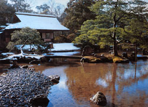
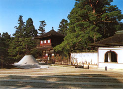

町歩きは大好きで、古い商店街のある町や路地・横丁を二時間でも三時間でも平気で歩きまわるのに、なぜか庭園や公園は三十分も歩くと、ぐったり疲れてしまう。
だから、いくつかのごひいきの小庭園は別として、なるべく、こういう空間には近づかないようにしてきた。
ところが、ここ晶文社の中川六平さんから「うちのホームページで何か続きものやらない？」と声をかけられたとき、いくつか思いついた企画を押しのけて、ムクムクと"野心的"テーマが起き上がった。
それは、庭園嫌いのはずの、このぼくが、わざわざ庭園を訪ね歩いてみよう、というものであった。
頼まれてもあまりやりたくないことを、自らに課してやってみようとするんですから、これほど"野心的"なことはないでしょう。
そして、この機会に、なぜ、ぼくが庭園嫌いになり、しかも、ずっとこれまで、ぼんやりとではあっても、庭園という空間を意識しつづけてきたのかということを、自分なりに考えてみよう、と思い立った。
どうやら、そこには被害者意識があったようだ。いや、ズバリ、被害者そのものであったのかもしれない。
ぼくは最初から庭園嫌いであったのではなく、何かによって庭園嫌いにさせられたのではないか……。
庭園探訪を始めるにあたって、まずは、ぼくを庭園嫌いにした原因をつきとめてみよう、と考えた。
子供のころを、いろいろ思い出そうとしていると、修学旅行のことが思い出された。中学生の修学旅行は奈良、京都。思えばこれがいけなかった。
法隆寺や金閣寺、桂離宮。どこかの古寺のチマチマした枯山水。あるいは例の円通寺の石庭などを見学するためにあちこち連れまわされたのだが、退屈で、かったるくて閉口した。先生やガイドは、これは国宝、これは重文、これは借景、などと、「ありがたがれ！」とばかりに、解説してくれるのだが、一応、フーンと感心したフリはするものの、中学生の本心は、（だから何なの、どこがオモシロイの）、っていう感じである。
鴨川べりのアベック見学や、祗園の舞妓ちゃんの後をつけて歩いたり、旅館でのマクラぶつけのほうが何倍も楽しい。京極で皆んなでお土産の絵葉書を買ったりとかね。
 |
 |
| 桂離宮の庭 |
銀閣寺の銀沙灘 |
| 福井朝日堂「京都名園全集」より |
今でも思う。無理矢理（コースに組まれているのだから無理矢理だ、しかも義務教育の一環なので文字通り"義務"としての）古寺めぐり、庭めぐりさせられるのだから、もう、途中から見学の観光バスから降りるのさえ嫌になってしまった。
中学生に、寺院や庭をこれでもか！ と山ほど見せてまわさせるなんて、これはイジメですよ。拷問ですよ。それに、引率の先生だって、ぜんぜん楽しそうじゃなかった（ように思える）。
これで庭嫌いにならないとしたら、ならないほうがオカシイ。しかもぼくの場合、さらに大学はなぜか（というか、学力がないのと向学心がごく狭い分野に限られていたので）よりにもよって造園学を専攻することになってしまった。
造園学といっても、大学の勉強では風景計画と造園学史を学ぶことになったので、必ずしも庭園めぐりをする必要もなかったのだが、一応、主だった庭園くらいは知っていなければ肩身が狭い。
またしても"義務"で、これ見よがしの（とぼくは感じてしまう）"名庭"を見て歩くこととなった。そして、この時も、それら"名庭"を、ありがたく拝見するというポーズを強いられつつ、自虐的庭園めぐりに、これ務めたという次第である。その結果、ぼくの心の中に育まれていった庭園に対する感情というものは――、
◎借景？ 笑わせるな。
◎枯山水？ ちゃんと水を流せ。
◎銀閣寺の銀沙灘？ 白砂で整然とデザインされた、あの"見るだけ"の庭で鬼ごっこでもしてメチャメチャにしたい。
◎回遊式林泉庭園？ 池で勝手に舟遊びさせてくれ。
◎なにが真・行・草の庭だ。
◎なにが船石、なにが龍門瀑だ、鯉魚石だ。
なにもかにもが、訳知り風美学、無理矢理の見立て、つまりは人に感心させるための、恐れ入れさせるための、サギ師まがいのデザインであるかのように思えてしまったのだ。なんと愚かな、なんと哀れな、シゲモリ君！
この後遺症は、ずっとつづいた。そして、めったなことでは、世の"名庭"には訪れない、近づかないようにしてきた。たとえ、なにかの機会に、それらの空間に立ったとしても、心ここにあらず、あたふたとその場を立ち去ることとなった。
しかし――今、ぼくは、あふるる野心を抱いて、自ら、庭園に対しようとしている。できることなら、世の偏見からも、また、これまでの自分の偏見からも自由になって、いや、なるために、庭園の中に立とうとしている。
予感はすでに育まれていた。
その予感の一つは――「庭に対する礼」は、ただやみくもに、ありがたがったり、感心したり、納得したフリをするのではなく、
◎まずは「驚く」
◎あるいは「呆れる」
◎もしかしたら「笑ってしまう」
この主要三反応が基本にあり、そしてその後、気がついてみれば、
◎「感心」したり、時に「感動」すらすることもあるのではないか、と。
「驚く」「呆れる」「笑ってしまう」の主要三反応は、じつは庭園観賞に対するだけではなく、芸術一般の観賞姿勢の基本、とぼくは思っているのだ。
美術を前にしたときも、音楽を聞いたときも、演劇を見たときも、あらかじめ「感動」を強要されない、自らもしようと思わない。まずは「驚く」「呆れる」「笑う」だ。
これが凝り固まった心と体を解きほぐしてくれる。そして、自由になった心身が、ときに感動を呼び、招くことにもなるのではないか。
予感の二つ目は――庭園という空間は、そのほとんどが虚栄や財力、権力誇示のため"毒"のある空間なのではないかということ。
しかし、その"毒気"は、草木や築山、石組、あるいは池といった"自然"あるいは"擬似自然"の要素によって構成されることにより、つまり"自然という衣装"をまとうことにより、一般には、その"毒気"が存在しないように思われてしまっているのではないか、ということ。
そして予感の三つめは――庭園は、それが名園といわれるものであればあるほど"正気"の空間であるはずもなく、庭造りという"異常なほどの作為"によって企てられ、造営されたいわば"狂気"に満ち満ちた反自然の場であるはず、と。
そして、この"狂気"の空間もまた、とくに日本庭園の場合は"自然"という隠れ蓑をスッポリとかぶせられることにより、その狂気が見過ごされることになってきたのではないか、と。
つまり、ぼくは、この機会に、たっぷりと"毒気"と"狂気"の立ち込める庭園という空間に、それを承知の上で立とうとしているのである。
ぼくの「お庭拝見」の心の準備はできた。
まずは、近か場の深川「清澄庭園」を訪れてみよう。日程は同行の晶文社の大河君とあらかじめ決める。決めたらその日は、雨でも台風でも大雪でも行く。地震があっても、近くで火災が発生したりしなければ行く。
もちろんこれは、いろいろな気象条件下での庭を見たいからだ。（本当は深夜や早朝の庭も見たいのだが、これは一般には一種の不法侵入となるので最近は決行しない）
とにかく第一回は下町の大名庭園として、その名も高い「清澄庭園」。そうだ、ここを訪れる前に、ちょうど、今、すぐ隣り町の東京都現代美術館で開かれている「イサム・ノグチ展」をのぞいて見よう。イサム・ノグチにも造園の作品がある。というか、造園はイサム・ノグチの主要な仕事の一つでもある。
イサム・ノグチと「清澄庭園」を同時に見て、何を感じるか感じないか。
ぼくの「庭の味方」、ニワノアジワイカタが始まる。
|